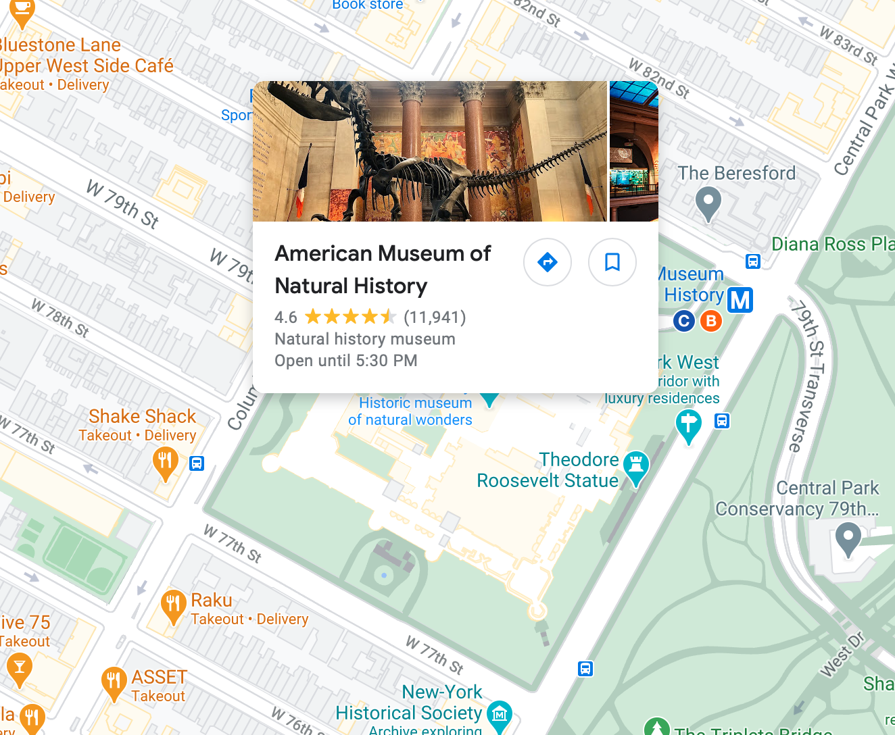

New York is one of the most diverse cities in the world. Consequently, we all have different experiences that make up our definition of the city. This is what makes this city so unique; everyone has different perspective of it. We all have experiences and special things that make up our New York.I have been to many places in the city to the point I know NY like the back of my hand. However, none of them have stood out to me like the American Museum of Natural History. This place defines my experience as a New Yorker because I have developed many memories here that will forever the part of the story of my life in New York.